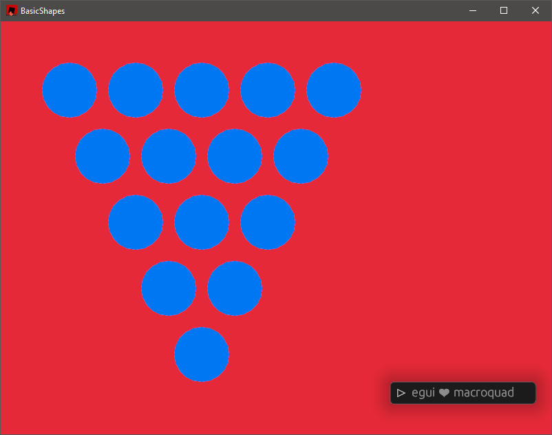

Roll Your Own
Reinventing the wheel will teach you.
I’ve decided to use my own implementations of things for two reasons.
- I need to continue to learn and grow.
- Using prebuild libraries can cause choice paralyses.
While a forever controversial opinion, in this case I think it is valid.
(Also I used a linear algebra library. ;))
Starting with Entity Positioning
Stand here. Okay, don’t move.
I referenced the following repositories and articles for this section:
To ECS or not to ECS
As usual, I get decision paralyses right at the start of any project.
It’s always difficult to decide what to work on first, and it’s even more difficult to pick which library or tools to use. Something I suffer from every single time is over-engineering right at the start.
The decision of whether to use an ECS or not is the first thing I’ve come across now. While perusing the options, I came across this in the hecs repository.
Why Not ECS?
… If your game will have few types of entities, consider a simpler architecture such as storing each type of entity in a separate plain
Vec. …
This thankfully woke me up early, and I remembered the YAGNI principle. Until managing my entities becomes unwieldy, I will stick with managing my components myself.
Starting on the Hex
First, here’s some excerpts from the Hex class. I implemented the necessities based on RedBlobGames’s Hexagon article. I’ve decided to use the cube coordinate system, given their arguments for its usefulness.
pub struct Hex {
q: i32,
r: i32,
s: i32,
}
impl Hex {
pub const fn new(q: i32, r: i32) -> Self {
Self { q, r, s: -q - r }
}
// ...
}
impl Add for Hex {
type Output = Self;
fn add(self, rhs: Self) -> Self::Output {
Hex::new(self.q + rhs.q, self.r + rhs.r)
}
}
mod tests {
use crate::hex::Hex;
#[test]
fn add_hex() {
let hex0 = Hex::new(6, -6);
let hex1 = Hex::new(1, -1);
let hex_result = Hex::new(7, -7);
assert_eq!(hex0 + hex1, hex_result);
}
}
The reasoning behind using 3D cube representations is weird, but it lets us do vector and scalar operations to find neighbours, multiply a given position, or even rotate it. It’s pretty neat.
The Graph
Direction
pub enum Direction {
// Where the first letter is positive and the second letter is negative.
XY,
XZ,
YX,
YZ,
ZX,
ZY,
}
static HEX_DIRECTIONS: [Direction; 7] = [
Direction::Some(Hex::new(1, -1)),
// ...
]
pub fn get_hex_direction(dir: Direction) -> &'static Direction {
match dir {
Direction::XY => &HEX_DIRECTIONS[0],
// ...
}
}
Okay this is whack. I understand how it works, but the details out a little over my head. Cube coordinates dictate that there is a constraint on our 3D representation of the hex grid.
q + r + s = 0
To maintain this constraint, S can be calculated as -q - r.
Which essentially means that, for a “direction”, each of q and r must exclusively a 1, -1, or a 0 at any given time.
q r (-q - r) = s q + r + s = 0 1 -1 (-1 + 1) 0 1 - 1 + 0 = 0 1 0 (-1 - 0) -1 1 + 0 - 1 = 0 0 -1 (0 + 1) 1 0 - 1 + 1 = 0 -1 1 (1 - 1) 0 -1 + 1 + 0 = 0 1 -1 (-1 + 1) 0 1 - 1 + 0 = 0 etc…
Neighbours
So without constraints of a graph, or a grid, you can calculate any neighbour of any hex simply by adding any of the 6 directions to any hex. Whether that neighbour exists on your graph is irrelevant to calculating a valid neighbour.
pub struct Graph {
nodes: HashMap<Hex, i32>,
}
I chose to use a graph representation of the hexes, which means a hash lookup. This means I can generate a neighbour, and just check to see whether it exists in the hashmap.
#[test]
fn get_direction_test() {
let result = get_hex_direction(Direction::XY);
if let Direction::Some(hex_direction) = result {
assert_eq!(*hex_direction, Hex::new(1, -1))
}
Prototype Drawing
fn hex_to_screen(fwd: &Matrix2<f32>, h: &Hex, width: &f32, height: &f32) -> Vec2 {
let x: f32 = (fwd.m11 * h.q() as f32 + fwd.m12 * h.r() as f32) * width;
let y: f32 = (fwd.m21 * h.q() as f32 + fwd.m22 * h.r() as f32) * height;
Vec2::new(x + 100.0, y + 100.0)
}
fn draw_hex_points(map: &Graph, forward_2x2: &Matrix2<f32>, camera: &Camera2D) {
let width: f32 = f32::sqrt(3.0) * 32.0;
let height: f32 = 64.0;
for hex in map.points().keys() {
let world_point = hex_to_screen(forward_2x2, hex, &width, &height);
let screen_points = camera.screen_to_world(world_point);
draw_circle(screen_points.x.into(), screen_points.y.into(), 0.1, BLUE);
}
}
I adapted the hex_to_screen function offered from the Red Blob Games implementation guide, which translates hex positions to screen space. (x, y) Then I translated each of those points to world space. The terminology doesn’t match up with what I remember learning, but the conversions end up looking like this.
Hex Coordinate { q: 2, r: 1, s: -3 } Screen Space (340.0, 196.0) World Space (-0.14999998, 0.26000002)
And that’s as far as I got!

Next up: Entities, and positioning entities on the graph.